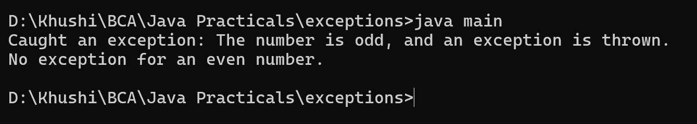

2. Write a Java program to create a method that takes an integer as a parameter and throws an exception if the number is odd.
class main {
public static void checkOddNumber(int number) throws Exception {
if (number % 2 != 0) {
throw new Exception("The number is odd, and an exception is thrown.");
}
}
public static void main(String[] args) {
try {
checkOddNumber(5); // Example of an odd number
} catch (Exception e) {
System.out.println("Caught an exception: " + e.getMessage());
}
try {
checkOddNumber(4); // Example of an even number
System.out.println("No exception for an even number.");
} catch (Exception e) {
System.out.println("Caught an exception: " + e.getMessage());
}
}
}
